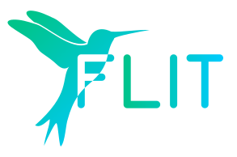

Flit 3.7.1
Flit 是一种将 Python 包和模块放在 PyPI 上的简单方法。它试图让你在打包时少花心思，并帮助你避免常见的错误。参见 为什么使用 Flit? 了解更多关于它与其他 Python 打包工具的比较。
安装
$ python3 -m pip install flit
Flit 需要 Python 3，因此需要使用 Python 3 版本的 pip 进行安装。
Python 2 模块可以使用 Flit 发布，但需要在 Python 3 上可以无误导入。
用法
假设你正在编写一个模块 foobar – 可以是一个单独的文件 foobar.py，也可以是一个目录 – 你想分发它。
确保 foobar 的文档字符串以一行摘要开始，说明该模块是什么，并有一个
__version__："""An amazing sample package!""" __version__ = "0.1"
如果你还没有安装 flit，请安装
python3 -m pip install flit
在包含该模块的目录中运行
flit init，创建一个pyproject.toml文件。它将看起来像这样：[build-system] requires = ["flit_core >=3.2,<4"] build-backend = "flit_core.buildapi" [project] name = "foobar" authors = [{name = "Sir Robin", email = "robin@camelot.uk"}] dynamic = ["version", "description"] [project.urls] Home = "https://github.com/sirrobin/foobar"
你可以编辑这个文件来添加其他元数据，例如，设置命令行脚本。见文档中的 pyproject.toml 页。
如果你已经有一个
flit.ini文件用于旧版本的 Flit，通过运行python3 -m flit.tomlify将其转换为pyproject.toml。运行此命令将你的代码上传到 PyPI
flit publish
一旦你的软件包发布了，人们就可以像其他软件包一样使用 pip 来安装它。在大多数情况下，pip 会下载一个 ‘wheel’ 包，一个它知道如何安装的标准格式。如果你特别要求 pip 安装一个 ‘sdist’ 包，它将在一个临时环境中安装和使用 Flit。
要在本地安装用于开发的软件包，运行
flit install [--symlink] [--python path/to/python]
Flit 一次打包一个可导入的模块或包，使用导入名称作为 PyPI 上的名称。一个包内的所有子包和数据文件都会被自动包含。